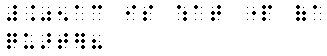
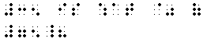
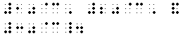
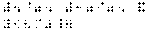
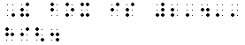
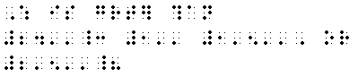

Monetary and Percent Signs:
| Monetary Signs |
| Cent |
¢ |
  |
| Dollar |
$ |
|
| Pound Sterling |
£ |
|
| Percent Sign |
% |
 |
Monetary and percent signs must be placed in the same position as in ink-print. No space should be left between monetary or percent signs and their related quantities or symbols. Monetary and percent signs are mathematical symbols and must be punctuated accordingly.
- 25¢ - 5¢ = 20¢
- .05¢ is what part of a quarter?

- $2.50 + $2.50 = $5.00
- $.07
- £4
- 60% of 6 = 3.6
- 35 is what % of 75

- 80% + 20% = 100%
- 10¢, 20¢, and 30¢.

- "$.25" is the same as "25¢."
- 5%, 10%, and 15%.

Prime Sign:
- The prime sign may be used to denote feet, inches, minutes or seconds. The braille symbol for the prime sign must be used wherever the print symbol appears, regardless of its meaning.
- the prime sign must be placed in the same order as in ink-print. When more than one prime sign is used in print, the equivalent number or signs must be used in braille. Prime signs must be unspaced from each other and from the quantity to which they apply. The prime sign is a mathematical symbol and must be punctuated accordingly.
- 5' is the same as 60"
- The box is 2'4" high.

- 12' + 15" = 13'3"
- Which is greater than 24": 1', 1'5", or 2'5"?

|